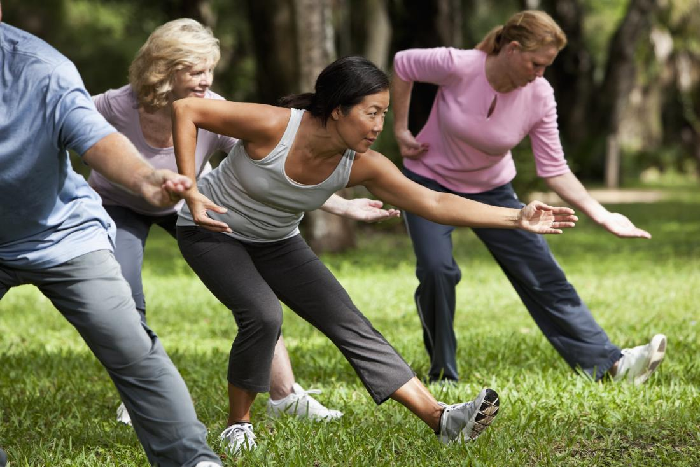

What is Tai Chi?
An art embracing the mind, body and spirit - Originating in ancient China, tai chi is one of the most effective exercises for health of mind and body. Although an art with great depth of knowledge and skill, it can be easy to learn and soon delivers its health benefits. For many, it continues as a lifetime journey.

There are many styles and forms of tai chi, the major ones being
Chen, Yang, Wu, Wu (different words in Chinese) and Sun. Each style
has its own features, but all styles share the same essential
principles.
The essential principles include mind integrated with the body;
control of movements and breathing; generating internal energy,
mindfulness, song (loosening) and jing (serenity). The ultimate
purpose of tai chi is cultivate the qi or life energy within us to
flow smoothly and powerfully throughout the body. Total harmony of
the inner and outer self comes from the integration of mind and
body, empowered through healthy qi through the practice of tai chi.
Tai Chi for Health programs are modernized tai chi incorporating
medical science to deliver health benefits more quickly.